Shri Kshetra Ganagapur
Abode of Shri Nrusimha Saraswati — where the Nirguna Padukas bless every devotee who comes with faith.
🙏 Jai Guru Datta
The Kshetra
Ganagapur, on the banks of the Bhima in Kalaburagi district, is among the holiest kshetras of the Datta sampradaya. Here Shri Nrusimha Saraswati — the second Kali-yuga incarnation of Lord Dattatreya after Shripad Shrivallabh — lived for some twenty-three years, curing the afflicted, guiding seekers and accepting bhiksha from the villagers.
Before departing for Shri Shaila, the Guru installed the Nirguna Padukas at the math and assured his devotees that he would remain present in Ganagapur for all time. To this day pilgrims bathe at the Sangam, worship the padukas, read the Guru Charitra and go for madhukari believing the Guru himself may accept their alms.
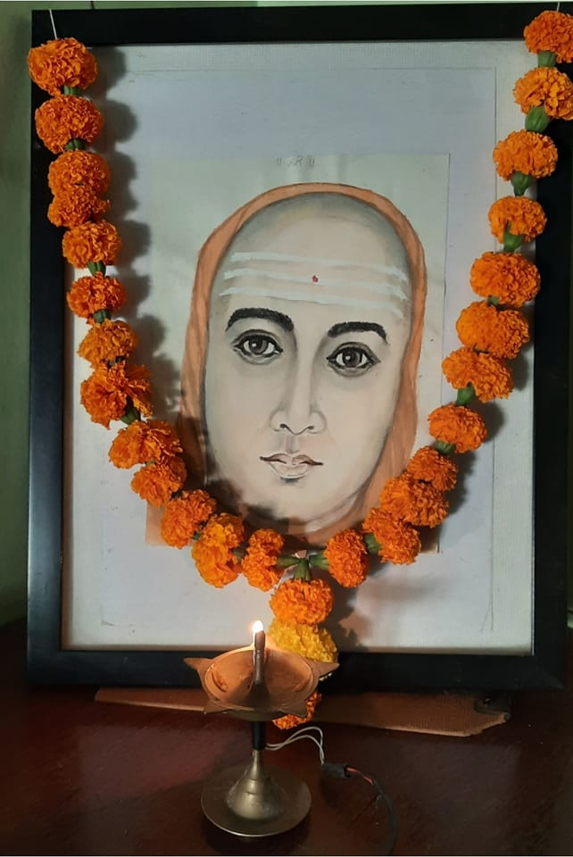
Shri Dutta Nirguna Math
From the Mahadwara to the silver-clad Garbhagriha — a walk through the heart of Ganagapur.
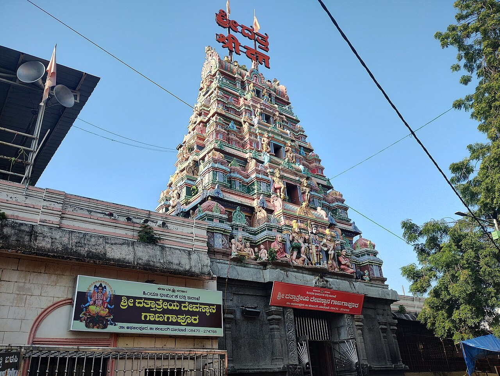
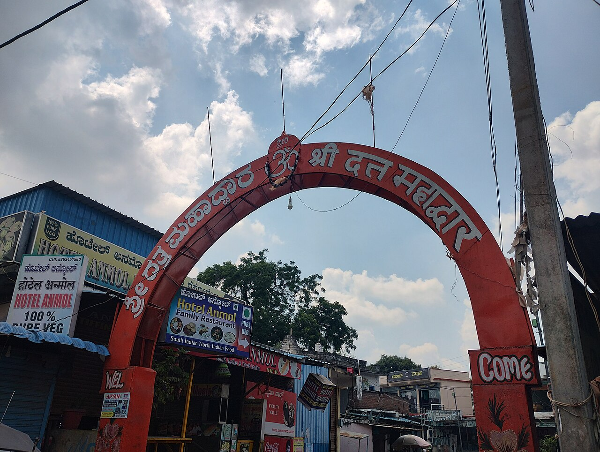
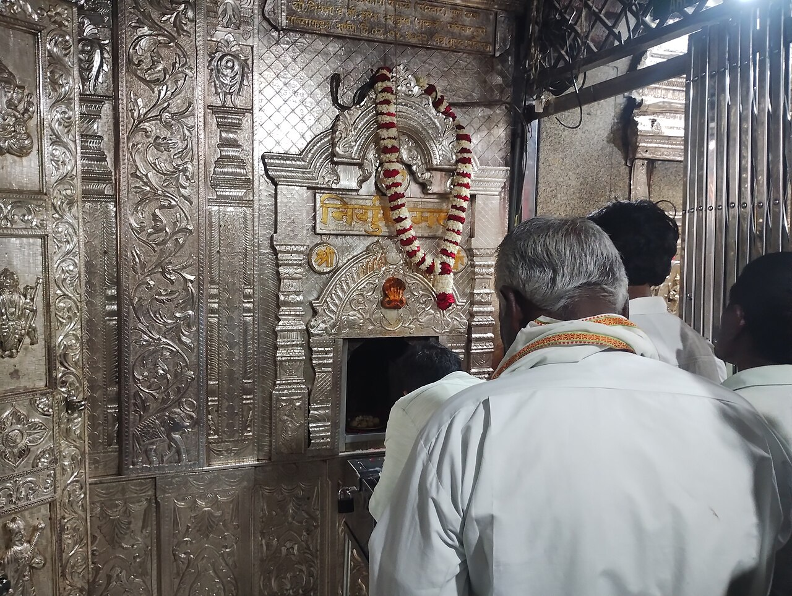
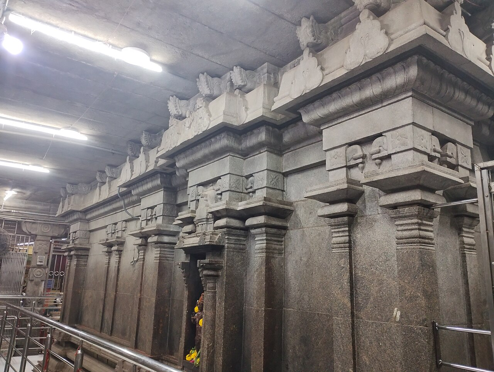
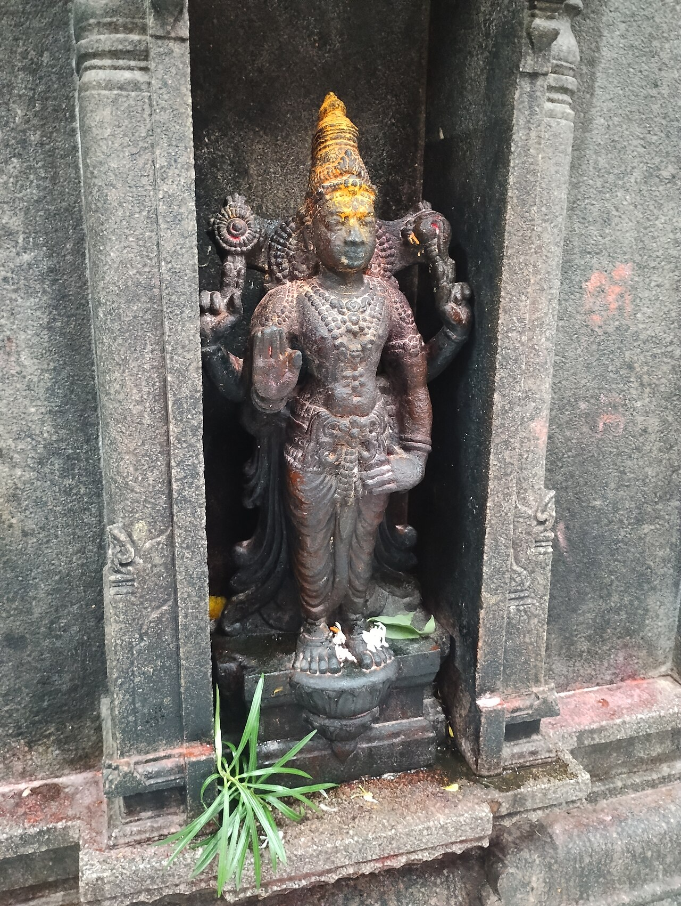
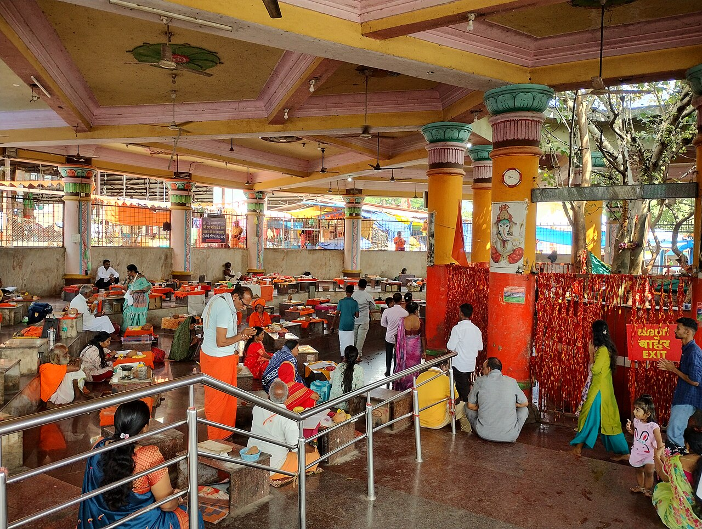
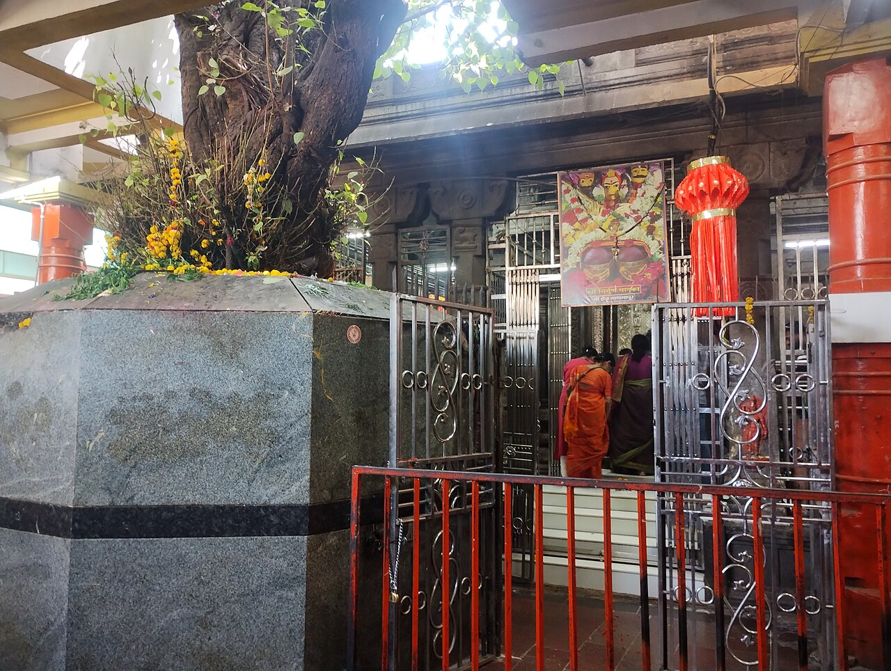
Live · Indian Standard Time
Timings are approximate and change on festivals, Purnima, Amavasya and crowded days.
✨ Best time to visit today: —
Estimate based on day of week, time and festival calendar.Skip standing in line — get a token and wait at the Sangam, the mandapa or your room.
Offer your devotion
Book in person or online — sevas can be performed in your name with sankalpa, and prasadam posted to your home anywhere in the world.
Live streaming will be enabled with the temple administration's permission.
Daily Datta Audio
Interactive Kshetra Map
Temples, the Sangam, transport and pilgrim facilities. Tap a place for details and directions.
Map pins are approximate; “Directions” opens Google Maps for exact routing.
Bhima – Amarja Sangam
Shri Guru Charitra describes eight sacred teerthas along the Bhima at Ganagapur. A bath in each is said to equal the great pilgrimages of Bharata.
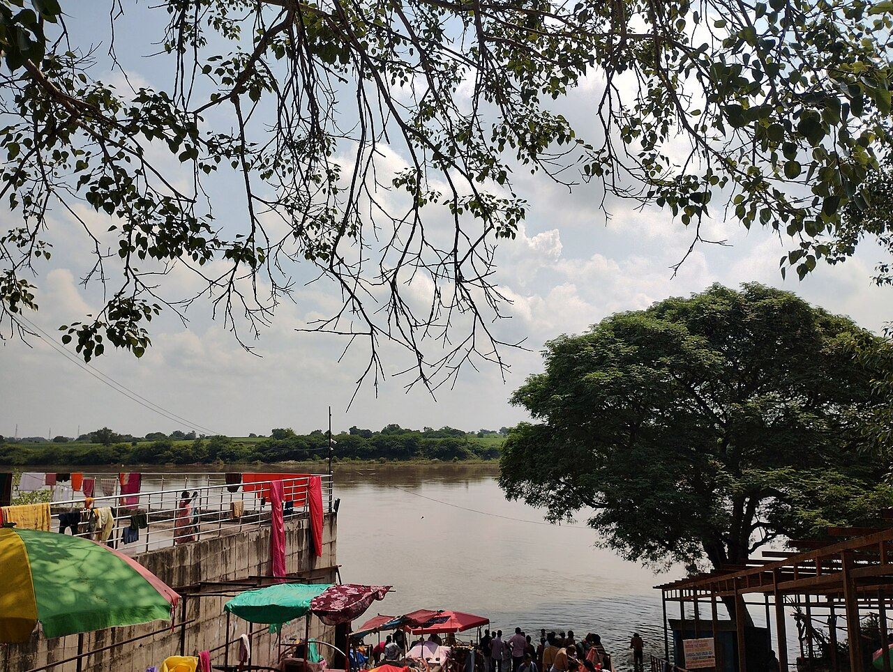
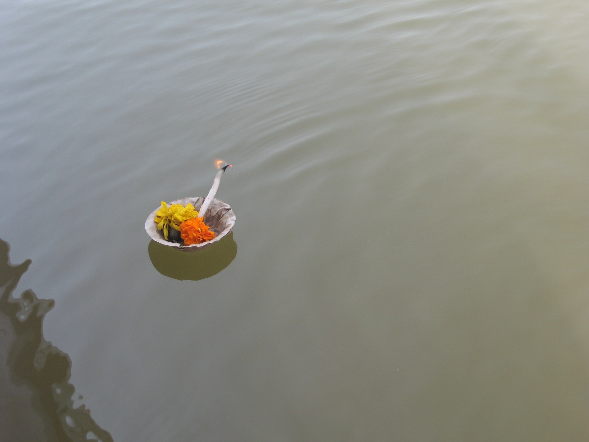
Around the Kshetra
Utsava Calendar 2026–27
Dates follow the lunar calendar and are tentative — please confirm with the temple office.
Family Pilgrimage Planner
Tell us when you arrive and leave — we'll arrange darshan, aratis, the Sangam, Ashta Teerthas and Mahaprasad into a day-by-day plan.
Your personalised itinerary will appear here.
Stay near the Guru
Book early for Thursdays, Purnima and Datta Jayanti — rooms fill weeks in advance.
Today's Mahaprasad
Sponsor a day of Annadana in your family's name.
Support the Kshetra
UPI · Cards · Net Banking. Receipts are generated instantly; 80G certificates where applicable.
Getting here
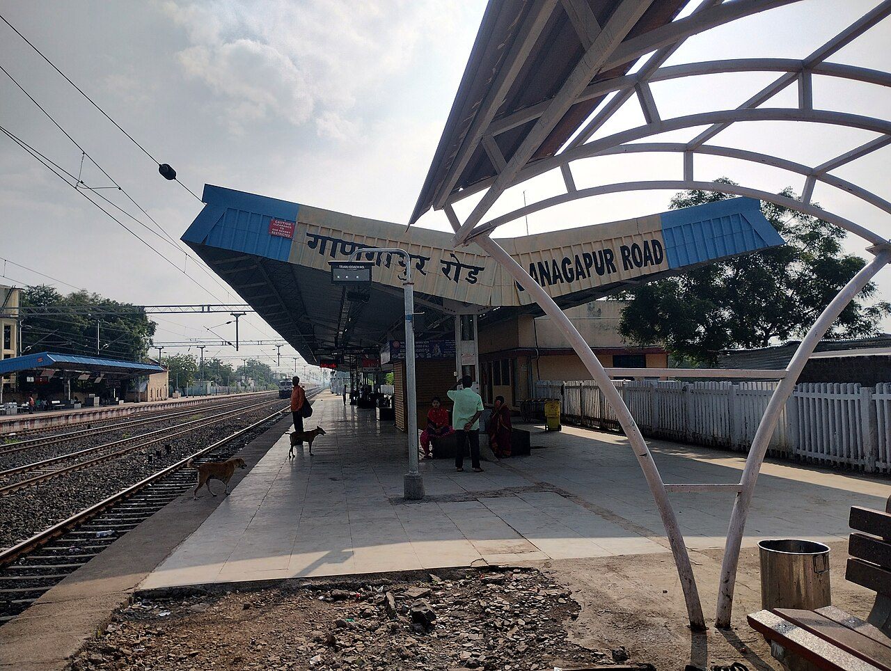
Digital Spiritual Library
The sacred life of Shripad Shrivallabh and Shri Nrusimha Saraswati in 53 adhyayas. Read, listen, or download in your language.
Darshan through the lens
We are here to help
Digambara Digambara Shripad Vallabha Digambara